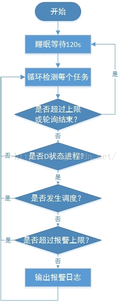

hungtask 机制分析
Contents
本文分析了内核中hungtask机制，下文中代码基于社区稳定版本内核，版本为：v4.4.128。
相关知识介绍
长期以来，处于D状态(TASK_UNINTERRUPTIBLE状态)的进程都是让人比较烦恼的问题，处于D状态的进程不能接收信号，kill不掉。在一些场景下，常见到进程长期处于D状态，用户对此无能为力，也不知道原因，只能重启恢复。
其实进程长期处于D状态肯定是不正常的，内核中设计D状态的目的是为了让进程等待IO完成，正常情况下IO应该会顺利完成，然后唤醒相应的D状态进程，即使在异常情况下(比如磁盘离或损坏、磁阵链路断开等)，IO处理也是有超时机制的，原理上不会存在永久处于D状态的进程。但是就是因为内核代码流程中可能存在一些bug，或者用户内核模块中的相关机制不合理，可能导致进程长期处于D状态，无法唤醒，类似于死锁状态。
针对这种情况，内核中提供了hung task机制用于检测系统中是否存在处于D状态超过120s(时长可以设置)的进程，如果存在，则打印相关警告和进程堆栈。如果配置了hung_task_panic（proc或内核启动参数），则直接发起panic，结合kdump可以搜集到vmcore。从内核的角度看，如果有进程处于D状态的时间超过了120s，那肯定已经出现异常了，以此机制来收集相关的异常信息，用于分析定位问题。
基本原理
hung task机制的实现很简单，其基本原理为：创建一个内核线程(khungtaskd)，定期(120)唤醒后，遍历系统中的所有进程，检查是否存在处于D状态超过120s(时长可以设置)的进程，如果存在，则打印相关警告和进程堆栈。如果配置了hung_task_panic（proc或内核启动参数），则直接发起panic。
整体流程框图如下：

代码分析
初始化函数hung_task_init
该函数初始化了一个内核线程来检测系统中是否有D状态超过120s的进程
static int __init hung_task_init(void)
{
// 注册通知，当内核panic时，调用函数panic_block
atomic_notifier_chain_register(&panic_notifier_list, &panic_block);
// 运行内核线程khungtaskd，其执行方法体为watchdog
watchdog_task = kthread_run(watchdog, NULL, "khungtaskd");
return 0;
}
subsys_initcall(hung_task_init);
内核线程处理：watchdog
该函数时hung task机制中khungtaskd内核线程的处理函数
/*
* kthread which checks for tasks stuck in D state
*/
static int watchdog(void *dummy)
{
/*设置当前khungtaskd内核线程的nice为0，即普通优先级，为了不影响业务运行 */
set_user_nice(current, 0);
for ( ; ; ) {
/*进程处于D状态的时间上线可通过sysctl/proc控制，默认为120s*/
unsigned long timeout = sysctl_hung_task_timeout_secs;
/*检测线程(watchdog)sleep 120s(默认)后，再次唤醒。*/
while (schedule_timeout_interruptible(timeout_jiffies(timeout)))
timeout = sysctl_hung_task_timeout_secs;
if (atomic_xchg(&reset_hung_task, 0))
continue;
/*醒来后执行实际的检测操作*/
check_hung_uninterruptible_tasks(timeout);
}
return 0;
}
check_hung_uninterruptible_tasks
每隔120s，由check_hung_uninterruptible_tasks来遍历所有的进程，看其是否为D状态，且120s没有被调度。
/*
* Check whether a TASK_UNINTERRUPTIBLE does not get woken up for
* a really long time (120 seconds). If that happens, print out
* a warning.
*/
static void check_hung_uninterruptible_tasks(unsigned long timeout)
{ /*hung task检测是检查的最大进程数，默认为最大的进程号*/
int max_count = sysctl_hung_task_check_count;
/*
* 每次遍历进程数的上限，默认为1024，这样做的目的是为了:
* 1、防止rcu_read_lock的占用时间太长。
* 2、hung task的watchdog占用CPU时间太长。如果没开内核抢占，则如果内核线程不主动调度的话，是不能发生进程切换的?
*/
/*
*Fixme:如果系统中的进程数比较多，那么就可能检测不到部分D状态进程了?不会，因为这里只是会调度一次，调度回来
*后，会继续遍历后面的进程*/
int batch_count = HUNG_TASK_BATCHING;
struct task_struct *g, *t;
/*
* If the system crashed already then all bets are off,
* do not report extra hung tasks:
*/
if (test_taint(TAINT_DIE) || did_panic)/*如果系统已经处于crash状态了，就不在报hung task了。*/
return;
rcu_read_lock();
do_each_thread(g, t) {
if (!max_count--)
goto unlock;
/*如果每次检测的进程数量超过1024了，则需要发起调度，结束rcu优雅周期*/
if (!--batch_count) {
batch_count = HUNG_TASK_BATCHING;
/*释放rcu，并主动调度，调度回来后检查相应进程是否还在，如果不在了，则退出遍历，否则继续*/
if (!rcu_lock_break(g, t))
goto unlock;
}
/* use "==" to skip the TASK_KILLABLE tasks waiting on NFS */
/*检测进程状态是否为D*/
if (t->state == TASK_UNINTERRUPTIBLE)
check_hung_task(t, timeout);///*检测进程处于D状态的时间是否超过120s。*/
} while_each_thread(g, t);
unlock:
rcu_read_unlock();
}
这里的遍历使用的
do_each_thread，它每次都是从init_task进行检测。所以内核demsg中打印出的第一个hung_tasks信息，不一定时第一个成为D状态的进程信息。
#define do_each_thread(g, t) \
for (g = t = &init_task ; (g = t = next_task(g)) != &init_task ; ) do
#define while_each_thread(g, t) \
while ((t = next_thread(t)) != g)
check_hung_task()
check_hung_task() 用来对给定进程，判断其是否在120s内一值为D状态：
static void check_hung_task(struct task_struct *t, unsigned long timeout)
{ /*进程上下文切换计数，以此来判断该进程是否发生过调度*/
unsigned long switch_count = t->nvcsw + t->nivcsw;
/*
* Ensure the task is not frozen.
* Also, skip vfork and any other user process that freezer should skip.
*/
if (unlikely(t->flags & (PF_FROZEN | PF_FREEZER_SKIP)))
return;
/*
* When a freshly created task is scheduled once, changes its state to
* TASK_UNINTERRUPTIBLE without having ever been switched out once, it
* musn't be checked.
*/
if (unlikely(!switch_count))
return;
/*
* 如果当前switch_count不等于last_switch_count，则说明在khungtaskd进程被唤醒期间，
* 该进程发生过调度。否则的话，说明进程没有发生过调度
* 也就是说，该进程一直处于D状态，因为last_switch_count只在这里更新，其它地方不会。
* hung task机制中的120s其实是通过khungtaskd内核线程的唤醒周期来控制的。
*/
if (switch_count != t->last_switch_count) {
/*更新last_switch_count计数，只在这里更新，该计数专用于hung task的检测。*/
t->last_switch_count = switch_count;
return;
}
trace_sched_process_hang(t);
/*
* hung task错误打印次数限制，防止dos攻击。默认为10次，由于是全局变量，
* 表示系统运行期间最多打印10次，超过后就不打印了。该参数应该可以
* 通过sysctl修改
*/
if (!sysctl_hung_task_warnings)
return;
if (sysctl_hung_task_warnings > 0)
sysctl_hung_task_warnings--;
/*
* Ok, the task did not get scheduled for more than 2 minutes,
* complain:
*/
pr_err("INFO: task %s:%d blocked for more than %ld seconds.\n",
t->comm, t->pid, timeout);
pr_err(" %s %s %.*s\n",
print_tainted(), init_utsname()->release,
(int)strcspn(init_utsname()->version, " "),
init_utsname()->version);
pr_err("\"echo 0 > /proc/sys/kernel/hung_task_timeout_secs\""
" disables this message.\n");
/*打印堆栈*/
sched_show_task(t);
/*如果开启了debug_lock，则打印锁的占用情况*/
debug_show_held_locks(t);
/*touch nmi_watchdog相关的计数器，防止在此过程中触发nmi_watchdog*/
touch_nmi_watchdog();
/*检测是否配置了/proc/sys/kernel/hung_task_panic，如果配置则直接触发panic*/
if (sysctl_hung_task_panic) {
/*打印所有CPU的堆栈*/
trigger_all_cpu_backtrace();
/*触发panic，如果配置了kdump就有用了*/
panic("hung_task: blocked tasks");
}
}